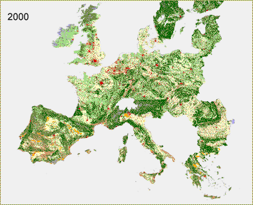

| Continental Market - A2 The Continental Market scenario features high pressure on available land resources. In spite of a slight decrease in population numbers, requirements for built-up area increase due to strong economic growth and prosperity growth lead to sprawled spatial patterns of urbanization (e.g., proliferation of second houses). The high protection level for European agriculture and macro-economic conditions cause an increase in land requirements for agricultural purposes. In many countries the combined requirements come at the cost of natural areas. Mostly small patches of nature and landscape elements will be lost first. Therefore an important, negative, impact on the natural and cultural-historical values of the European landscapes, is to be expected. |
 Click here for full screen version |